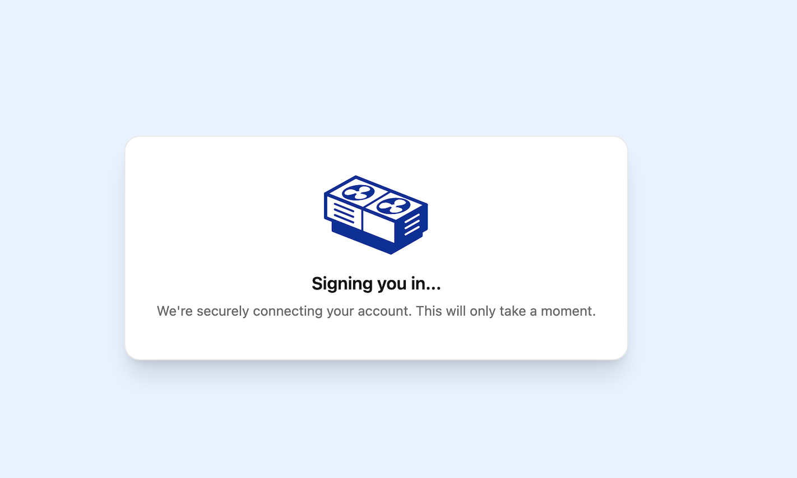

Agent updates that follow you, plus a sign-in polish

Agent responses now reach you even after you've moved to another page, so you don't miss a result. Cloning a rate book became a single step, and the sign-in screens and sidebars got a consistency pass.